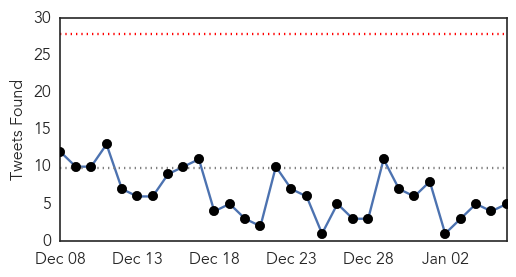

MERS
30-Day Web Trend
1 alerts, 0 warnings

30-Day Twitter Trend
2 alerts, 0 warnings

Article Locations

Article Confidences

Top Articles:
Top Tweets:
-
No tweets found for Jan 06, 2015
Ebola
30-Day Web Trend
0 alerts, 0 warnings
30-Day Twitter Trend
0 alerts, 0 warnings

Article Locations
Article Confidences

Top Articles:
- 1.000
- Ebola in UK: British nurse 'stabilised', says minister
- 1.000
- Ebola: A wake-up call for leaders
- 1.000
- Ebola: Fighting a deadly virus
- 1.000
- No Ebola cases detected in Iraq - Iraq
- 0.999
- Kaci Hickox, Maine nurse who defied quarantine, details Ebola mission — Health — Bangor Daily News — BDN Maine
- 0.999
- U.S. Health Care Worker Exposed to Ebola Under Observation
- 0.999
- EU plans to hold international conference on fight against Ebola virus
- 0.999
- Health Worker Exposed to Ebola in Sierra Leone Reaches U.S. for Observation
- 0.999
- American Healthcare Worker Exposed To Ebola Arrives In Nebraska
- 0.999
- Isis does not have Ebola – but contingency plan being developed for Iraq
- 0.999
- Britain improves Ebola screening since first case
- 0.999
- This Is What Functioning Government Looks Like
- 0.999
- Trials of untested Ebola drugs begin in West Africa
- 0.999
- AU pledges support for Ebola-hit nations
- 0.999
- UN Launches Mobile App To Help Fight Ebola Stigma
- 0.998
- Ebola volunteers should be praised, not stigmatised
- 0.998
- Untested Ebola Drugs Begin Trials in West Africa
- 0.998
- New Omaha patient apparently has not yet developed Ebola
- 0.998
- New Omaha patient apparently has not yet developed Ebola
- 0.998
- New Ebola lockdown in Sierra Leone as airport checks upped
- 0.998
- Sierra Leone week of prayer and fasting amid devastating Ebola crisis
- 0.998
- KBS World Radio
- 0.998
- Ebola volunteers should be praised, not stigmatized: UK charities
- 0.998
- On first visit to hard-hit nations, new UN Ebola mission chief vows scaled-up support to end crisis
- 0.997
- US Medical Worker Arrives in Omaha for Further Observation. Potential Case of Ebola?
- 0.997
- Army team to join Ebola fight in Sierra Leone
- 0.997
- Lehigh Valley Health Network saw need for Ebola treatment center in region
- 0.997
- Ebola-infected UK nurse fights for life
- 0.997
- Liberia close to beating Ebola as cases dwindle
- 0.996
- Governments, Competitors Cooperate to Produce Ebola Vaccine
- 0.996
- Taking the Ebola Message to the Arab World
- 0.995
- More U.S. troops return from Ebola mission
- 0.995
- Trials of untested Ebola drugs begin in West Africa
- 0.994
- Kenya : Liberia plans to reopen schools in February as Ebola spread ebbs
- 0.994
- Ebola Drug Trial Starts In Liberia
- 0.994
- Clinical trial for Ebola drug starts
- 0.992
- S. Korea beefs up Ebola safety training
- 0.992
- Ebola-Hit Countries in West Africa to Reopen Schools: UN Mission
- 0.992
- No Ebola cases detected in Iraq
- 0.991
- Liberia plans to reopen schools in February
- 0.991
- Oxford University begins trial of Ebola drug on Liberian volunteers
- 0.991
- Struggling with Ebola, Losing with Malaria
- 0.990
- No, there aren’t any Ebola cases in Iraq
- 0.990
- Reports of suspected Ebola cases in Iraq are untrue
- 0.989
- China to Award Country's Ten Best Ebola Doctors $8,000 Each
- 0.987
- Charity group to investigate how British nurse contracted Ebola
- 0.987
- Public Health England completes Ebola contact tracing
- 0.984
- New Interactive Mobile App For Ebola Survivors Launched
- 0.984
- Hollow tree source of Ebola epidemic, scientists say
- 0.984
- More support needed for local health workers responding to Ebola, advocates say
Showing top 50 articles...
Top Tweets:
- 0.822
- BBC News - Ebola: New vaccine trial begins http://t.co/15it3g2vmh Ebola EbolaResponse EbolaOutbreak
- 0.814
- RT: Scientists used guinea pigs to model Ebola. Animals could spread Ebola without direct contact http://t.co/kLyMr5qSFM http://t…
- 0.771
- RT: US lifts Ebola screening for travelers from Mali http://t.co/IcunsaDf0N Ebola screening
- 0.765
- RT: CDC comms expert Nicole developed & disseminated Ebola-prevention messages in Sierra Leone. Read her story: http://t.co/f3dj0N…
- 0.765
- RT: CDC comms expert Nicole developed & disseminated Ebola-prevention messages in Sierra Leone. Read her story: http://t.co/f3dj0N…
- 0.744
- RT: Does ISIS have Ebola? [2] @WHO says: "MOH Iraq, in collaboratn w/WHO confirms - no suspected case of Ebola in Iraq …
- 0.741
- British ebola nurse: 'condition has stablised' - Telegraph http://t.co/mu3DJ3IqGx
- 0.698
- Doctors report that 70% of Ebola patients in Sierra Leone now survive. How can we keep the progress going? http://t.co/CWfQRfMI1F
- 0.625
- There is no scientific evidence that ozone therapy can cure Ebola | via
- 0.581
- British nurses in Makeni, Sierra Leone, on why the Ebola fight matters more than ever http://t.co/YjTWAPbAfz
- 0.515
- RT: From's Iraq office: no Ebola cases in the country. http://t.co/56a96RNNtf